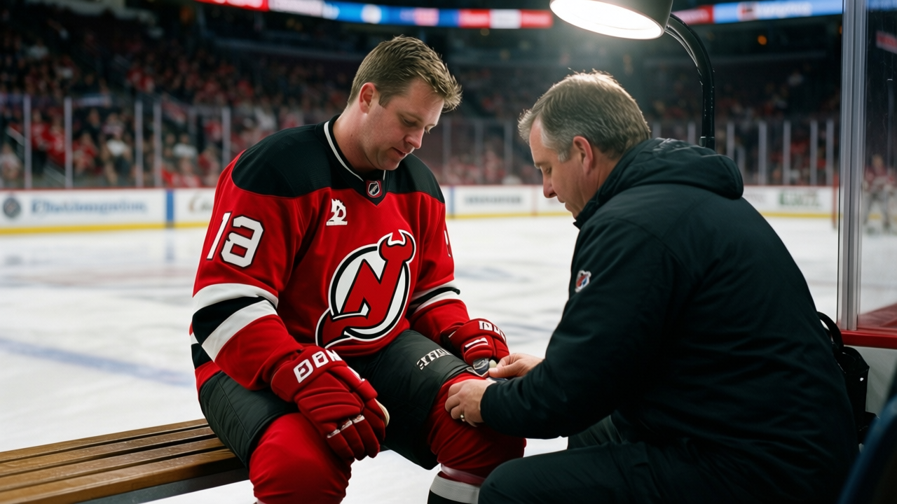
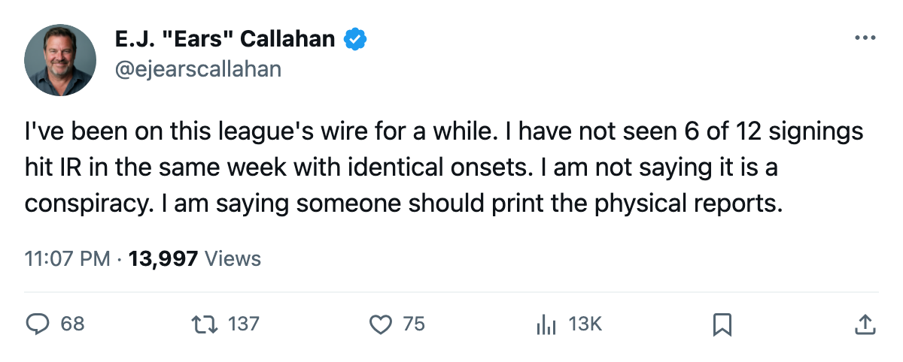
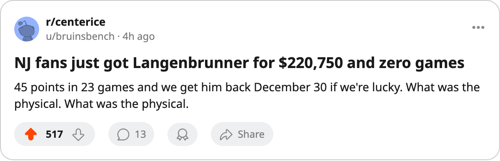

RUMOR METER: 12 Deals Signed This Week. 6 Players Injured. Same 4-Day Window. 🔥🔥
Every IR onset in the signing class falls between Dec. 4 and Dec. 7. Two of them re-signed at pay cuts that smell like a medical caveat.
 E.J. "Ears" CallahanInsider · The Hot Stove
E.J. "Ears" CallahanInsider · The Hot Stove
Twelve free agents signed between Dec. 1 and Dec. 3. Six of them are on the injured list, all with onsets between Dec. 4 and Dec. 7.
 Mike Sillinger88,
Mike Sillinger88,  Jamie Langenbrunner86,
Jamie Langenbrunner86,  Ed Jovanovski87,
Ed Jovanovski87,  Bryan Allen77, Ivan Huml74 and
Bryan Allen77, Ivan Huml74 and  Randy Robitaille72 have new contracts and new injury designations. Sillinger and Langenbrunner re-signed at pay cuts. The other four arrived on fresh deals.
Randy Robitaille72 have new contracts and new injury designations. Sillinger and Langenbrunner re-signed at pay cuts. The other four arrived on fresh deals.
Sillinger was at 88 overall and $1.80M for  Phoenix Coyotes. The Coyotes brought him back Dec. 1 for $608,500. He is out until Jan. 3.
Phoenix Coyotes. The Coyotes brought him back Dec. 1 for $608,500. He is out until Jan. 3.
Langenbrunner carried 86 overall and $2.10M at  New Jersey Devils, posting 45 points in 23 games before going down. New Jersey Devils re-signed him Dec. 2 at $220,750. His return date is Dec. 30.
New Jersey Devils, posting 45 points in 23 games before going down. New Jersey Devils re-signed him Dec. 2 at $220,750. His return date is Dec. 30.
A man who would know: "You don't take a cut that steep unless somebody flagged something in the medical room." The league source is shorter: "Too clean to be bad luck."
The 4 newcomers hurt just as fast
 Vancouver Canucks signed Bryan Allen Dec. 1 for $134,590 and Ed Jovanovski Dec. 2 for $482,170. Both are shelved. Allen returns Dec. 12. Jovanovski is out until Feb. 19.
Vancouver Canucks signed Bryan Allen Dec. 1 for $134,590 and Ed Jovanovski Dec. 2 for $482,170. Both are shelved. Allen returns Dec. 12. Jovanovski is out until Feb. 19.
Ivan Huml signed with  Boston Bruins on Dec. 3 for $320,820, out until Dec. 12. Randy Robitaille joined
Boston Bruins on Dec. 3 for $320,820, out until Dec. 12. Randy Robitaille joined  Tampa Bay Lightning the same day at $132,850, returning Feb. 25, the longest absence in the group.
Tampa Bay Lightning the same day at $132,850, returning Feb. 25, the longest absence in the group.
VAN now has 4 players on the IR list, tied with  New York Rangers,
New York Rangers,  Carolina Hurricanes and Boston Bruins for the most in the league. The payroll sat at $34.94M before those two signings.
Carolina Hurricanes and Boston Bruins for the most in the league. The payroll sat at $34.94M before those two signings.

The healthy half of the Dec. 1-3 class is depth: Jason Marshall to  Washington Capitals ($611,810), Brad Brown to
Washington Capitals ($611,810), Brad Brown to  Detroit Red Wings ($467,600), Janne Laukkanen and Andrew Brunette to
Detroit Red Wings ($467,600), Janne Laukkanen and Andrew Brunette to  Buffalo Sabres ($339,170, $297,360), Mark Eaton and Bill Houlder to
Buffalo Sabres ($339,170, $297,360), Mark Eaton and Bill Houlder to  Nashville Predators ($42,460, $337,630). None appear on the IR list.
Nashville Predators ($42,460, $337,630). None appear on the IR list.
What you ask for when a new signing never suits up
Phoenix Coyotes and New Jersey Devils own contracts that are roster filler until the January and late-December return dates. Sillinger's $608,500 buys nothing before Jan. 3. Langenbrunner's $220,750 buys nothing before Dec. 30. Neither club gets a pick for a player who may not dress a single game in a new sweater.
The Bureau's Morale Scale has Langenbrunner at 97. He wanted Newark. The $220,750 the Devils offered reflects what the medical exam found. The IR list confirmed it.

